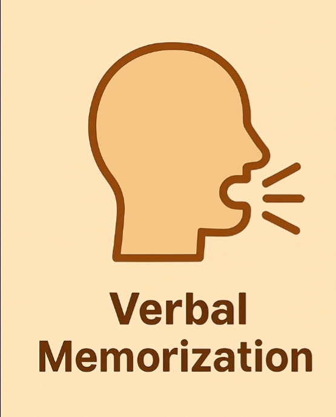

Digital memorazation methods
A study under the name of "The critical importance of Retrieval for learning" by Karpicke, J. D., & Roediger, H. L. (2008), shows that students who used retrieval practice retained 80% of the material a week later, while those who only studied the material retained only about 36%.
Why it's more effective to use it?
- Interactive Learning: It teaches through problems, not lectures. You learn a technique by using it, which strengthens memory through application.
- Spaced Repetition: Their course structure revisits key concepts over time, reinforcing memory and helping long-term retention.
- Intuitive Explanations: Techniques are broken down visually and conceptually, which makes them easier to remember because you understand the why, not just the how.
- Immediate Feedback: When you solve a problem, you get instant feedback. If you make a mistake, you see why it was wrong, which helps you avoid repeating it.
- Progressive Difficulty: Problems are arranged from basic to advanced. This scaffolding builds a strong foundation and ensures you don't forget earlier techniques.
- Gamification & Motivation: The app uses streaks, achievements, and a clean interface that keeps you engaged, making memorization feel more like a challenge than a chore.
Some good apps to use
Brilliant, StudySmarter, Flashcards World
Practice Retrieval
Test yourself regularly on the material you’ve studied. It strengthens memory and shows what you need to review further.
1. Verbal Memorization Techniques
Verbal learners often remember lyrics easily and tend to be fluent with words. If that sounds like you, these techniques might be a perfect match.

1) Chunking
Group information into categories or smaller units. It helps manage large content by breaking it down into digestible pieces.
2) Spelling Mnemonics or Alliteration
Use the first letters of items to form acronyms (e.g., NASA). This helps recall grouped information more easily.
3) Sing It Out
Turn information into songs or jingles. Using rhythm and melody makes recall faster and more fun.
4) Building Technique
Connect new information to what you already know. This deepens understanding and makes recall easier by expanding your existing knowledge web.
2. Visual Memorization Techniques
If you think in images or have a strong imagination, you might be a visual learner. These techniques use visualization to boost memory.

1) Storytelling (Linking Technique)
Link items together in a story. By remembering the first part, you can follow the chain to recall the rest.
Watch how it works: Storytelling Memory Technique Video
2) Flashcards
Use flashcards with colors and headings to make facts stick. Combine with repetition (like spaced repetition systems) for best results.
3) Mind Maps
Great for visualizing and organizing info. Sketch out ideas or concepts in a map format to see how they relate, using paper or software tools.
4) Loci Technique (Memory Palace)
Visualize a familiar place and assign facts to objects or locations within it. When recalling, mentally walk through the place and retrieve the info. With practice, you can scale up to entire buildings or cities in your imagination.